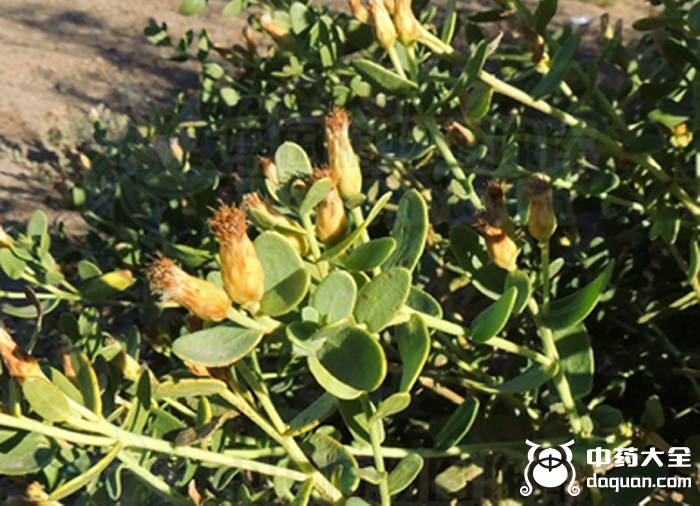
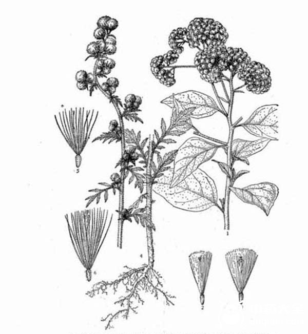

中药在清火清热方面的功效有着显著的效果，有时候上咽喉疼煮一味中药茶就会好，清热解毒的中药有很多，中药大全小编和大家来了解下矮脚苦蒿的功效与作用。

【矮脚苦蒿的功效与作用】 清热解毒、消炎、泻火止血
【主要功能】
1、治疗中耳炎
2、风火牙痛
3、风火眼、眼结膜炎
4、口腔炎
5、咽喉炎
6、慢性气管炎
7、肾炎
8、黄疸型肝炎
9、疮疡
10、便血、崩漏、外伤出血
【用法用量】
内服：煎汤，2～3钱;或捣汁。
外用：捣汁滴耳、点眼或研末撒。
【附方】
1、治中耳炎
苦蒿鲜枝叶汁，加青鱼胆滴耳内。(性味以下出《云南中草药选》)
2、治外伤出血
矮脚苦蒿三钱，乌贼骨二钱，见血飞二钱。共研末外用。(《昆明民间常用草药》)
3、扁桃炎
扁桃体炎及喉头炎：矮脚苦蒿3g。捣烂，冷开水浸泡，内服(《曲靖专区中草药手册》)
4、外伤出血
矮脚苦蒿9g，乌贼骨6g，见血飞6g。共研末外用。(《云南中草药选》)
5、风火眼、眼结膜炎
6～9g。或捣汁饮服。外用适量：捣汁滴耳、点眼;或煎液熏洗;或研末撒;或捣敷。
6、慢性气管炎
将金龙胆草除去老茎及根部，碾粉，水泛为丸，上滑石衣。每次1克，日服3次，饭后服。治疗565例，近控109例(19.3%)，显效187例(33.1%)，好转207例(36.6%)，无效62例(10.9%)。
【副作用】
发生率占24.4%。表现为腹胀，恶心，呕吐，腹泻，口干，头昏等。一般发生在服药后1～2天内，程度轻微，可自行消失，不妨碍继续服药。此药味极苦，应在饭后服。病人在服药后普遍反应食欲增加，睡眠、精神均转好，服后具有较明显的消炎、祛痰、平喘及止咳作用。实验证明金龙胆草煎液对甲型链球菌、肺炎双球菌、溶血性链球菌、肺炎杆菌、白色葡萄球菌、金黄色葡萄球菌、卡他球菌等7种细菌均有抑菌作用。
【药材性状】

茎圆柱形，上部多分枝，长30-150cm，直径2-6mm，表面橘黄色或黄绿色，有纵棱槽，其上有众多的色长柔毛，长3-4mm;质较坚脆，易折断。单叶互生，黄绿色，两面均有众多的白色长柔毛，皱缩扭曲，易破碎，展平后，下部叶具柄，上部叶几无柄，叶片羽状深裂至全裂，裂片披针形或线状披针形，全缘或浅裂。头关花序直径不足1cm，集于顶端呈圆锥状;花黄白色;成熟果实极易脱落飞扬，瘦果浅黄色，扁色，长约1mm，有冠毛1列，长5-6mm。气微，味极苦。
【性 味】苦，平。
【归 经】归肺、胃、肝经。
结语：以上为矮脚苦蒿的功效和作用，以及用法的所有内容，相信您已经对矮脚苦蒿的药性有所了解，了解更多清热解毒的中药请关注中药大全。